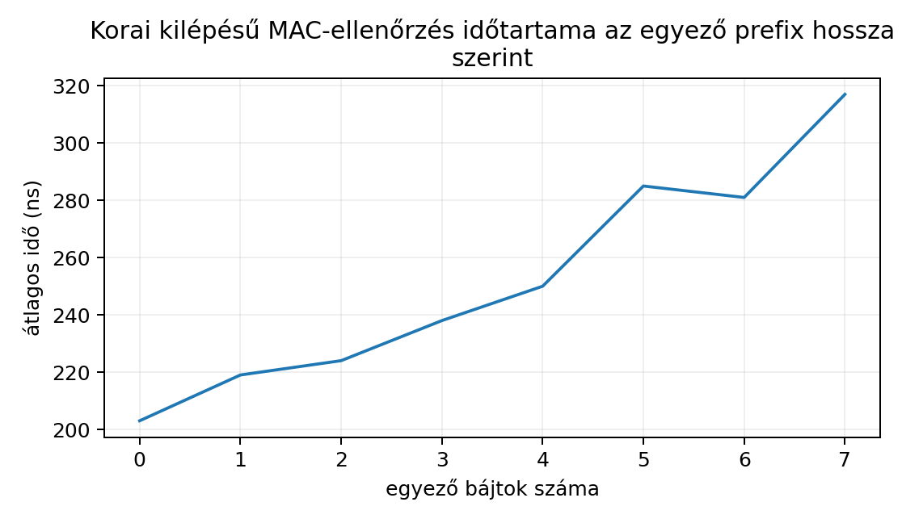

Egy webes API a kéréseket MAC-címkével hitelesíti. A szerver a bejövő
címkét a saját számításával hasonlítja össze. Ha az összehasonlítás a
Python == operátorához hasonlóan az első eltérő bájtnál
megáll, akkor a válaszadás ideje elárulja, hány bájt egyezik. A támadó a
hálózaton keresztül, érvényes kulcs nélkül, byte-ról byte-ra
kitalálhatja az érvényes címkét.
Paul Kocher 1996-ban mutatta meg ugyanezt a gondolatot nagy számok moduláris hatványozásánál is: a titkos kitevő bitjei által vezérelt extra szorzások idejéből a privát kulcs visszafejthető. Az időzítéses oldalcsatorna azért különösen veszélyes, mert nem igényel fizikai hozzáférést: elég a válaszidőt mérni.
A MAC-ellenőrzés gyakori hibája, hogy a kód az első eltérő bájtnál kilép. Ilyenkor a futási idő arányos az egyező prefix hosszával:

A diagram azt mutatja, hogy minél több bájt egyezik a próbált címke és a helyes címke között, annál tovább fut az ellenőrzés. Ezt a növekvő időt a támadó mérni tudja.
Definíció (időzítéses oldalcsatorna). Legyen olyan eljárás, amely nyilvános mellett titkos bemenetet dolgoz fel. Ha a futási idő statisztikailag függ -tól, és a támadó választásával, valamint mérésével -ra vonatkozó információt kap, akkor időzítéses oldalcsatornát nyit.
Definíció (konstans idejű eljárás a titkos bemenetre). Az eljárás konstans idejű a titkos bemenetre nézve, ha az utasítássorozat és a memória-hozzáférések sorozata független értékétől. Ha emellett a felhasznált utasítások végrehajtási ideje sem függ az operandusoktól, akkor a futási idő is független -tól. A gyakorlatban ez négy szabályt jelent: nincs titokfüggő elágazás, nincs titokfüggő ciklushatár, nincs titokfüggő indexelés, és a felhasznált aritmetikai utasítások végrehajtási ideje nem függ a titoktól.
Két klasszikus példát érdemes megérteni.
Példa (korai kilépésű összehasonlítás). Tekintsük a következő, szándékosan gyenge eljárást:
def insecure_compare(a: bytes, b: bytes) -> bool:
if len(a) != len(b):
return False
for x, y in zip(a, b):
if x != y:
return False
return TrueHa a helyes címke 2a b7 e1 4c és a próbált érték
2a b7 00 00, akkor az első két bájt egyezik, a harmadiknál
a ciklus kilép. Ha a próba 2a 00 00 00, akkor már az első
bájt után kilép. A megfigyelt idő tehát egy bájtnyi feltételezést is tud
igazolni.
Példa (négyzetre emelés–szorzás). A moduláris hatványozás klasszikus balról jobbra haladó alakja:
r ← 1
for bit in bits(d):
r ← r * r mod N
if bit == 1:
r ← r * a mod NHa a titkos kitevő bitje , az eljárás egy extra moduláris szorzást végez. A bitfüggő futási időből egy mérési sorozattal a teljes visszafejthető. Ugyanez a minta jelenik meg az elliptikus görbés skalárszorzásnál Skalárszorzás: double-and-add és a Montgomery-létra esetén, amikor a bit egy pontösszeadást vezérel.
Az itt bemutatott támadás kizárólag a saját, szándékosan gyenge játékimplementáció ellen fut, oktatási célból; valós rendszer ellen ilyet futtatni jogellenes és etikátlan.
Támadás (byte-by-byte MAC-kitalálás). A szerver
rendelkezik egy titkos kulccsal, amelyből a helyes címkét számítja. A
támadó egy
bájtos címkét próbál beküldeni. A szerver a bejövő címkét
insecure_compare-rel hasonlítja össze, és a válaszidőt a
támadó méri.
b || 0...0 próbát.Az alábbi ábra a 31.1.4 példájának címkéjén
(2a b7 e1 4c) egy egyszerű időmodellel mutatja, hogyan
emelkedik ki a helyes bájt a 256 jelölt átlagidejéből, és hogyan tűnik
el a különbség, ha a zaj szórásához képest kevés a mérés (vö. a
lentebbi, a távoli időzítés zajszűréséről szóló szakasz
képletével).
A támadás költsége mérés, ahol az egy bájthoz tartozó ismétlésszám. Egy 6 bájtos címkénél ez nagyságrendileg néhány millió mérés, szemben a nyers erő műveletével.
A fő elv: a titoktól függő vezérlési döntéseket maszkolt aritmetikával kell helyettesíteni.
Konstans idejű bájt-összehasonlítás. Ahelyett, hogy az első eltérésnél kilépnénk, minden bájtot végigolvasunk, és az eltéréseket bitenkénti XOR-ral felhalmozzuk:
def ct_compare(a: bytes, b: bytes) -> bool:
if len(a) != len(b):
return False
diff = 0
for x, y in zip(a, b):
diff |= x ^ y
return diff == 0Figyelem: a Python-kód csak az elv szemléltetése. A
CPython-értelmező nem ad konstans idejű garanciát (a tetszőleges
pontosságú int és a maszkolt műveletek ideje sem
garantáltan állandó); éles kódban a C-ben megírt
hmac.compare_digest-et vagy egy bevált könyvtár primitívjét
használd. Nincs titokfüggő elágazás, a ciklus mindig az összes bájton
végigfut. A Python standard könyvtárában a
hmac.compare_digest pontosan ezt a feladatot látja el, és
ez a helyes választás MAC-ellenőrzéshez. Továbbvitt
eredmény. Ezt a technikát használjuk a API-misuse: a leggyakoribb kriptográfiai programozási
hibák alfejezetben, amikor a leggyakoribb API-misuse hibákat
tárgyaljuk; a Könyvtárválasztás, auditálás,
tesztvektorok és fuzzing alfejezetben, ahol a bevált könyvtárak
használatát írjuk elő; és az 1. projekt:
fájltitkosító eszköz AEAD-dal és jelszóból származtatott kulccsal
esetén, ahol a MAC-ellenőrzést kell megvalósítani.
Feltételes kiválasztás maszkkal. A
select(bit, x, y) művelet a bit értéke szerint
x-et vagy y-t ad vissza, elágazás nélkül:
def ct_select(bit: int, x: int, y: int) -> int:
mask = -bit # bit=1 esetén csupa 1, bit=0 esetén 0
return (mask & x) | (~mask & y)A bit titkos is lehet, a futási idő független az
értékétől, mert mindkét operandust mindig kiszámítjuk. A négyzetre
emelés–szorzás konstans idejű verziója:
r ← 1
for bit in bits(d):
r ← r * r mod N
t ← r * a mod N
r ← ct_select(bit, t, r)Itt a szorzás mindig megtörténik, csak az eredmény felhasználása feltételes.
Feltételes csere. A Montgomery-létra használ
feltételes bit-vezérelt cserét Skalárszorzás:
double-and-add és a Montgomery-létra. A
cswap(bit, a, b) logika:
def ct_swap(bit: int, a: int, b: int) -> tuple[int, int]:
mask = -bit
t = mask & (a ^ b)
a ^= t
b ^= t
return a, bHa bit == 1, a művelet kicseréli a két értéket; ha
bit == 0, érintetlenül hagyja őket. A végrehajtott
utasítások mindkét esetben ugyanazok.
Egy távoli támadó nem látja a pontos futási időt: a hálózati késleltetés, a szerverterhelés és az operációs rendszer ütemezése zajt ad hozzá. A támadó ezért minden próbát sokszor megismétel, és átlagot vagy mediánt számol. Ha egy mérés , ahol a valódi idő és a zaj szórással, akkor a mintaátlag
szórása csökken a minta elemszámának négyzetgyökével. Ezért egy kicsiny, például 20 ns-os szivárgás is kimutatható, ha a támadó elég sok mérést tud végezni. Továbbvitt eredmény. Ugyanez a statisztikai megfigyelés adja az alapját a cache-alapú támadásoknak a Cache-támadások és a Spectre-osztály alfejezetben, ahol a memória-hozzáférés időzítését mérjük.
A leghíresebb távoli időzítéses támadást 2003-ban publikálták OpenSSL RSA-megvalósítása ellen (Brumley–Boneh). A támadók egy hálózaton keresztül elérhető OpenSSL-alapú webszerver privát RSA-kulcsát fejtették vissza a válaszidőket mérve. A támadó a CRT-ben használt prímtényezőt találta ki bitenként: olyan rejtett szövegeket küldött, amelyek közelében vannak, és mivel a Montgomery-redukció extra kivonásainak száma, valamint a szorzási algoritmus (Karatsuba vagy normál) attól függ, hogy kisebb vagy nagyobb -nál, a válaszidő elárulta következő bitjét. A szükséges lekérdezésszám nagyságrendje (ellenőrzendő) százezres–milliós volt. A tanulság az lett, hogy a kriptográfiai könyvtárak nagy számokkal végzett műveleteinek is konstans idejűnek kell lenniük, nem elég a MAC-összehasonlítást megjavítani. Az évszám és a pontos OpenSSL-verzió ellenőrzésre szorul; a támadás létezése és jellege stabil ismeret a szakirodalomban.
Az alábbi oktatási kód saját gépen megméri a korai kilépésű összehasonlítás szivárgását:
# OKTATÁSI CÉLRA – NEM ÉLES HASZNÁLATRA
import time, secrets, statistics
def insecure_compare(a: bytes, b: bytes) -> bool:
if len(a) != len(b):
return False
for x, y in zip(a, b):
if x != y:
return False
return True
key = secrets.token_bytes(16)
for prefix_len in range(0, 16):
trial = key[:prefix_len] + b'\x00' * (16 - prefix_len)
times = []
for _ in range(5000):
start = time.perf_counter_ns()
insecure_compare(trial, key)
end = time.perf_counter_ns()
times.append(end - start)
print(f"{prefix_len:2d} {statistics.mean(times):8.1f} ns")Kimenet egy tényleges futásból (CPython 3.14.4; a kulcs véletlen, az értékek gépenként és futásonként eltérnek, a lineáris trend a fontos):
0 202.9 ns
1 218.9 ns
2 224.0 ns
...
15 438.3 nsLátszik, hogy minél hosszabb az egyező prefix, annál tovább fut a
függvény. A secrets.token_bytes valódi véletlenszámot ad; a
példa csak mérési célú.
A konstans idejű feltételes kiválasztás ellenőrzése:
# OKTATÁSI CÉLRA – NEM ÉLES HASZNÁLATRA
def ct_select(bit: int, x: int, y: int) -> int:
mask = -bit
return (mask & x) | (~mask & y)
print(hex(ct_select(1, 0x1234, 0xABCD))) # 0x1234
print(hex(ct_select(0, 0x1234, 0xABCD))) # 0xABCD0x1234
0xabcd== vagy a str.startswith
használata MAC-címkére. A Python bájtsorozatokra adott
összehasonlítása nem garantáltan konstans idejű; mindig
hmac.compare_digest-et kell használni.if secret: ... típusú kód megváltoztatja az
utasítássorozatot; helyette maszkolt kiválasztást kell használni.table[secret_index] módon olvas, az időzítés a cache miatt
is szivárog; ezt a Cache-támadások és a
Spectre-osztály alfejezetben tárgyaljuk.time.time()
másodperc alapú, és gyakran nem elég pontos; a
time.perf_counter_ns() alkalmas az oktatási mérésre.== bájtsorozatokra mindig
konstans idejű?diff |= x ^ y ciklus?mac_ok = (received_tag == expected_tag);
if mac_ok: return 200 else: return 401?ct_swap elágazás
nélkül?1. feladat (A) Írj Pythonban konstans idejű bájtsorozat-összehasonlítót, és magyarázd el, miért nincs benne titokfüggő elágazás.
2. feladat (A) A moduláris hatványozás
pszeudokódjában a if bit == 1: r = r * a mod N sort cseréld
le ct_select-re. Írd fel a teljes átalakított
pszeudokódot.
3. feladat (B) Egy távoli támadó ns időszivárgást akar kimutatni. A hálózati zaj szórása . Hány mérés átlaga szükséges ahhoz, hogy az átlag szórása ns alá csökkenjen? Értelmezd, miért lehet ez a gyakorlatban nagyon nagy szám.
4. feladat (B) Írj oktatási Python-kódot, amely egy
3 bájtos tokent insecure_compare-ral ellenőrző függvényt
byte-by-byte kitalál a mért idők átlaga alapján. A kód csak a saját
játékfüggvény ellen fusson.
5. feladat (C) Bizonyítsd be, hogy a XOR-os konstans idejű összehasonlító utasítássorozata nem függ a bemenő bájtok értékétől. Mit kell feltételeznünk a hardver XOR-utasításáról?
6. feladat (D) Elemezd a következő, szándékosan hibás „javítást”:
def bad_compare(a: bytes, b: bytes) -> bool:
for i in range(len(a)):
if a[i] != b[i]:
return False
return TrueMiért nem oldja meg a konstans idejű követelményt? Javítsd ki.
bytes-összehasonlítást; a rövidzáras kiértékelés időzítési
oldalcsatornát nyithat. A hmac.compare_digest a helyes
választás.== összehasonlítás:
az első eltérő bájtnál megáll, és ezzel a helyes prefix hosszát
szivárogtatja. Helyesen:
mac_ok = hmac.compare_digest(received_tag, expected_tag).mask = -bit értéke bit=1 esetén csupa 1,
bit=0 esetén csupa 0. A t = mask & (a ^ b)
hatására ha bit=1, akkor t = a ^ b, és a két
XOR elvégzi a cserét; ha bit=0, akkor t = 0,
és nincs változás. Az utasítássorozat mindkét esetben ugyanaz.ct_select-nek kell
mindig lefutnia, és csak a maszkolt eredményt kell beírni.def ct_compare(a: bytes, b: bytes) -> bool:
if len(a) != len(b):
return False
diff = 0
for x, y in zip(a, b):
diff |= x ^ y
return diff == 0Nincs benne titokfüggő elágazás: a hosszellenőrzés a nyilvános
hosszra vonatkozik, a ciklus mindig lefut, a diff értéke
változik, de az utasítások sorozata nem.
r ← 1
for bit in bits(d):
r ← r * r mod N
t ← r * a mod N
r ← ct_select(bit, t, r)
return rA szorzás minden bitnél megtörténik; a ct_select
maszkkal választ, így nincs if.
A feltétel: ns, ahol ns. Ebből , tehát . Ezért a távoli támadások sokszor órákig vagy napokig tartanak, hacsak a szivárgás nem erősebb; a gyakorlatban ezért kell minden időzítési szivárgást megszüntetni.
# OKTATÁSI CÉLRA – NEM ÉLES HASZNÁLATRA
import secrets, statistics, time
SECRET = secrets.token_bytes(3)
def insecure_check(guess: bytes) -> bool:
for x, y in zip(guess, SECRET):
if x != y:
return False
return True
def time_batch(guess: bytes, batch: int = 200) -> float:
t0 = time.perf_counter_ns()
for _ in range(batch):
insecure_check(guess)
return (time.perf_counter_ns() - t0) / batch
def best_byte(prefix: bytes, pad: int, rounds: int = 40) -> int:
# körforgásos mérés: minden körben minden jelöltet egyszer mérünk, így a
# lassú óra- vagy terheléseltolódás minden jelöltet egyformán érint
samples = {b: [] for b in range(256)}
for _ in range(rounds):
for b in range(256):
samples[b].append(time_batch(prefix + bytes([b]) + b"\x00" * pad))
return max(samples, key=lambda b: statistics.median(samples[b]))
found = b""
for pos in range(2): # az első két bájt időzítéssel
found += bytes([best_byte(found, 2 - pos)])
# az utolsó bájtnál a helyes és a hibás próba ugyanannyi iterációt fut,
# ezért a visszatérési érték dönt
for b in range(256):
if insecure_check(found + bytes([b])):
found += bytes([b])
break
print("Talált:", found.hex())
print("Valódi:", SECRET.hex())Az (egymás utáni, jelöltenkénti) átlagmérés a gépi drift és a ~15 ns-os jel miatt megbízhatatlan, ezért a kód körforgásosan (minden körben minden jelöltet) mér, kötegelt időméréssel és mediánnal. Az utolsó bájtot nem időzítéssel keressük: ott a helyes és a hibás próba ugyanannyi iterációt fut, csak a visszatérési érték tér el. Kimenet (egy tényleges futásból, CPython 3.14.4; a titok véletlen, hat futásból mind a hatszor egyezett):
Talált: 0e5981
Valódi: 0e5981A mérés zajos; ha egy bájt hibás, növeld a rounds
értékét.
A ct_compare ciklusa minden bájton végrehajtja az
x ^ y és a diff |= ... műveleteket. Nincs
if, nincs return a ciklus belsejében. Ezért a
gépi kódra fordított (pl. C) változat utasításainak sorrendje és száma
független a bájtok értékétől (a Python-értelmező szintjén ez nem
garantált). Feltételezzük, hogy a hardver XOR-, OR- és összehasonlító
utasításai konstans időben futnak, függetlenül az operandusok értékétől;
ez a gyakori utasításokra teljesül, de például egyes
mikroarchitektúrákon az utasítások közötti adatfüggőségek is okozhatnak
apró eltérést.
A bad_compare továbbra is az első eltérő bájtnál
visszatér, tehát ugyanaz a korai kilépéses szivárgás. Ráadásul a ciklus
a támadó által megadott a hosszáig fut, és nincs
hosszellenőrzés: bad_compare(b"", tag) igazat ad
(lefuttatva: bad_compare(b"", b"\x01\x02") == True), tehát
egy üres címkével bármely üzenet átmegy az ellenőrzésen; ha
len(a) > len(b), IndexError keletkezik. A
helyes változat előbb a hosszt ellenőrzi (a hossz nyilvános), majd
XOR-felhalmozással (ct_compare) vagy
hmac.compare_digest-tel minden bájtot összevet.
Az időzítéses oldalcsatorna akkor keletkezik, ha a titkos bemenet
befolyásolja a végrehajtási időt. Kocher 1996-os eredménye óta tudjuk,
hogy a korai kilépésű összehasonlítás és a bitfüggő szorzás a privát
kulcsot vagy MAC-címkét szivárogtathatja. A konstans idejű programozás
alapelve: nincs titokfüggő elágazás, ciklushatár, indexelés vagy időben
változó aritmetikai utasítás. A ct_compare
XOR-felhalmozással, a ct_select maszkkal, a
ct_swap feltételes cserével valósít meg elágazásmentes
vezérlést; MAC-ellenőrzéshez a Pythonban a
hmac.compare_digest a bevált eszköz. A távoli támadó a zajt
statisztikai átlagolással csökkenti. Továbbvitt
eredmény: a konstans idejű programozást használjuk az API-misuse: a leggyakoribb kriptográfiai programozási
hibák, a Könyvtárválasztás, auditálás,
tesztvektorok és fuzzing és az 1. projekt:
fájltitkosító eszköz AEAD-dal és jelszóból származtatott kulccsal
alfejezetben; az időzítéses szivárgást a Cache-támadások és a Spectre-osztály alfejezetben
terjesztjük ki.
Az időzítéses támadások alapjait Paul Kocher 1996-os cikke, a távoli
OpenSSL-támadást a Brumley–Boneh 2003-as publikáció írja le; ezek
klasszikus kriptográfiai források. A hmac.compare_digest és
a time.perf_counter_ns pontos API-viselkedése a Python
dokumentációjában ellenőrizhető. A példában szereplő konkrét idők és az
OpenSSL-támadás verziószámai tájékoztató jellegűek, és a pontos
adatokhoz a források egyeztetése szükséges. A fordítóoptimalizálás
konstans idejű kódot módosító hatását itt nem tárgyaltuk; a gyakorlati
szempontokat az API-misuse: a leggyakoribb
kriptográfiai programozási hibák alfejezetben és a Könyvtárválasztás, auditálás, tesztvektorok és
fuzzing alfejezetben vizsgáljuk.